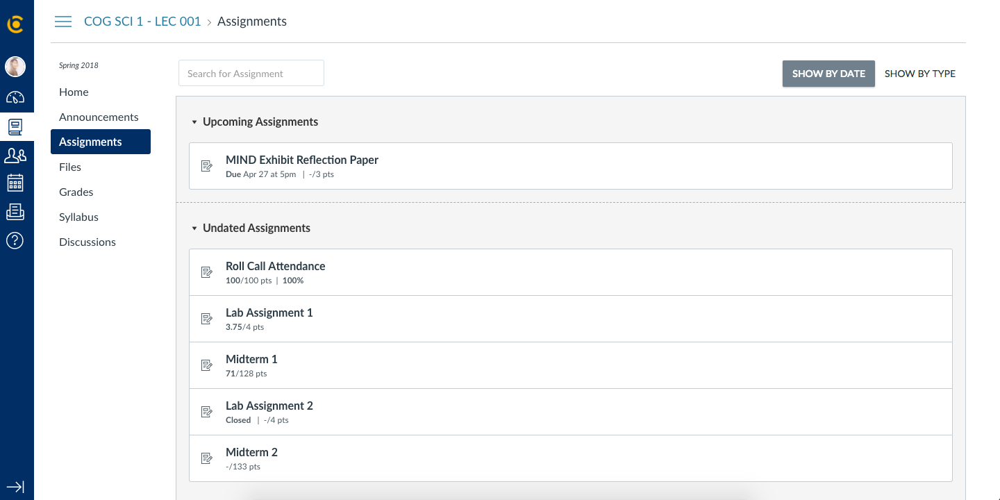
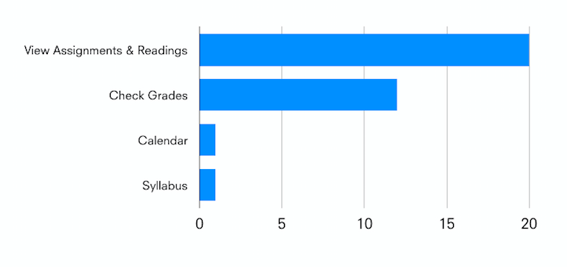
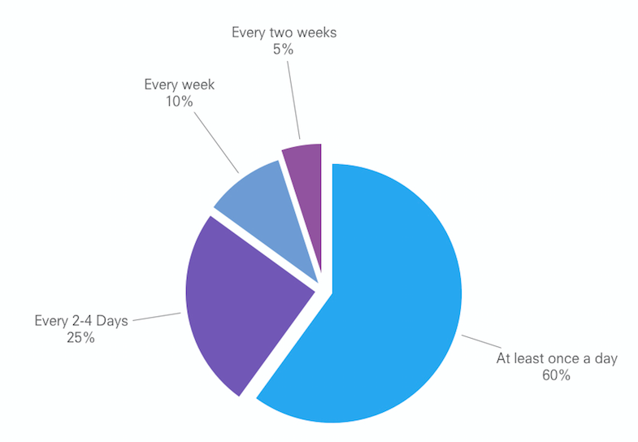

bCourses is a Canvas web and mobile application
used as a platform to connect students and instructors. Students use bCourses to view and submit homework assignments, connect
with peers and faculty, and see their personalized grades. I decided to complete this redesign in a 2-week design sprint.
Despite most courses at UC Berkeley being hosted on bCourses, the current interface is painful to use. The app
leaves users feeling confused and frustrated, namely in its most crucial interactions.

Current home view. Action items are pushed to the right and there is lack of course distinction.

Lack of pertinent information regarding assignment submission.

Unintuitive file search.


Survey results of student use cases.
A survey of 20 students currently attending UC Berkeley showed that students weren't using bcourses beyond the functionalities
that enabled students to succeed in their classes(submitting assignments, viewing readings), When diving
into the pain points of the students, we discovered some key insights:
-
Idle Features
-
Lack of Clarity
-
Building Community
-
Aesthetics and Feel
Users noted they tended to not use features such as calendar and inbox,
stating they already had established methods and mediums for carrying out this functionality.
Students noted the lack of clarity
across the main features of
bCourses— this included file search,
course distinction, and assignment
submissions.
Lots of students noted that they did
not use the Groups feature, but
wanted a better way to use the
platform to connect with students
and faculty in the class.
Many students noted that bCourses’ UI felt clunky and out-of-date. A major part of the
redesign was to align the user interface up to speed with more modern design trends.